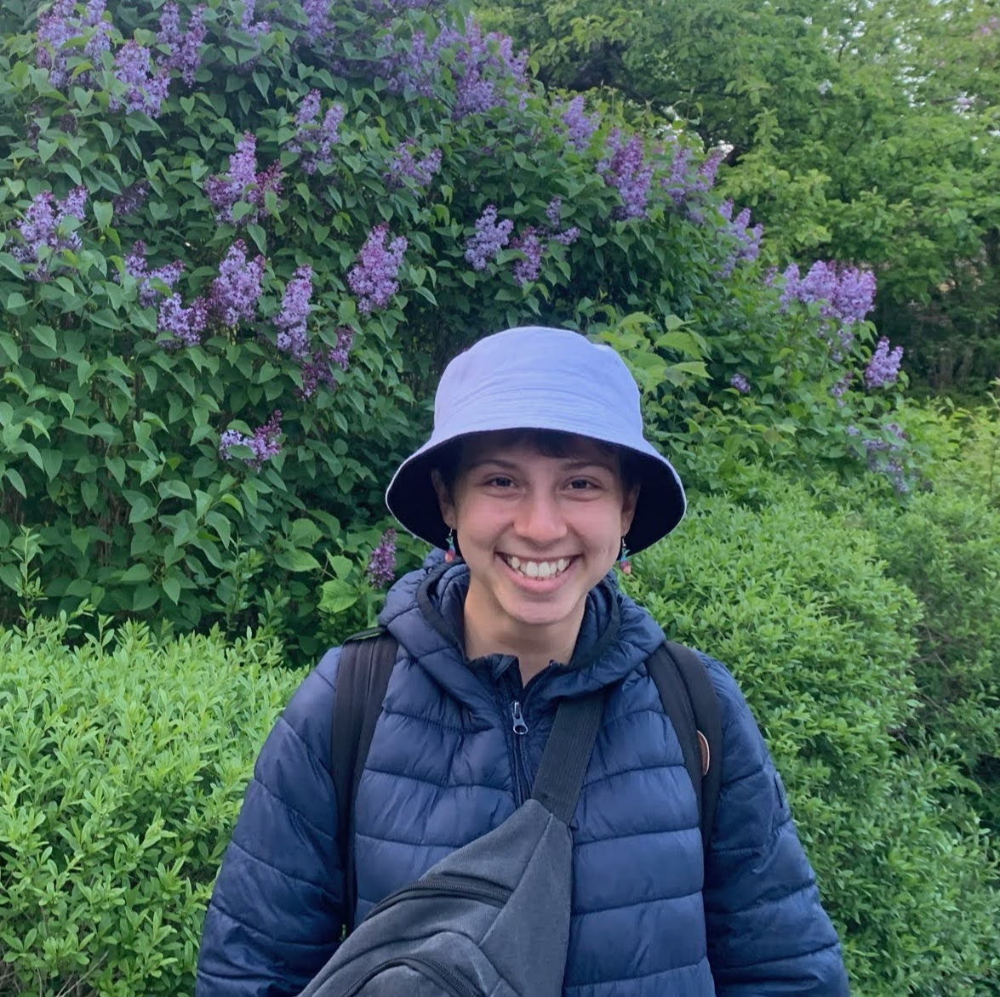

About

Hey, I'm Rebecca! I'm a software engineer based in Boston, MA and currently work at Spotify. I spend a lot of time being active and outdoors, live in an intentional housing community, and love reading, crocheting, doing bad improv comedy, and having exploratory convos with friends.
Learn more about my projects here.
What I'm doing right now
Last updated: December 30, 2025
- improving genre accuracy of music recommendations at Spotify
- skiing, climbing, acro yoga, and commuting by bicycle
- living in an intentional housing community where we share food and responsbilities
- crocheting, reading, listening to music, and occasionally writing
What I've done previously
- managed Discover Weekly at Spotify (read more here)
- spent a summer in Tel Aviv at BrainQ Technologies doing product management
- studied abroad in Edinburgh, Scotland
- developed full-stack software at Spotify and Paperless Parts
- helped revamp the tech consulting track of TAMID at Northeastern
- built an app with Generate to get medical assistance to people who need it faster
- tutored the accelerated version of CS2500
- cracked jokes on stage with NU & Improv'd
Talk to me about...
- intentional living
- community-building
- reducing your carbon footprint
- mentorship
- personal growth
Contact me!
Send me a message at rswernofsky@gmail.com! You can also check me out on LinkedIn and Github.